Shimizu
Shimizucho · Hokkaido
Shimizucho
Highlighted on the Hokkaido map.
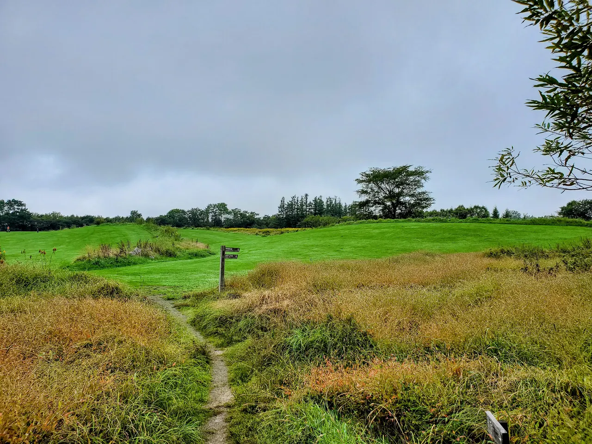
清水町 (北海道)" width="1280" height="853" loading="lazy">Stay
プラウクラス
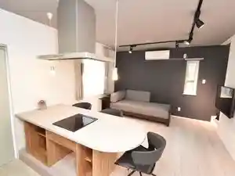
Puraukurasu
とまり屋 Yumeatom
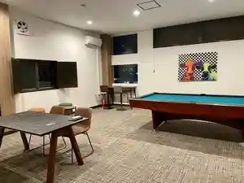
Tomari Ya Yumeatom
和みの風
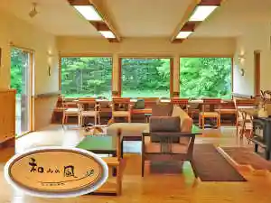
Nagomi No Kaze
大草原の小さな宿 こもれび
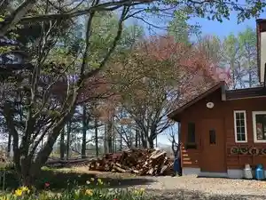
Daisougen No Chiisa Na Yado Komorebi
十勝ワッカの森キャンプ場
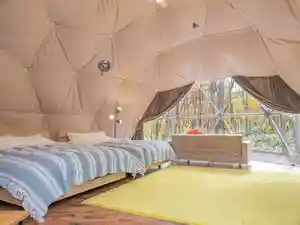
Tokachi Wakka No Mori Kyanpu Ba
Dining
とかち亭
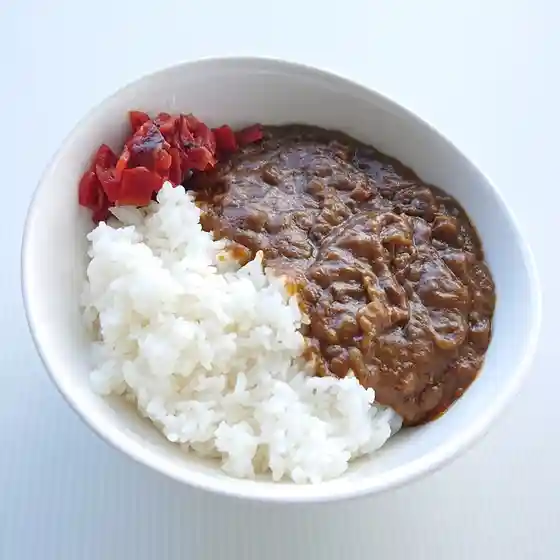
Tokachi Tei
ツナガリウム
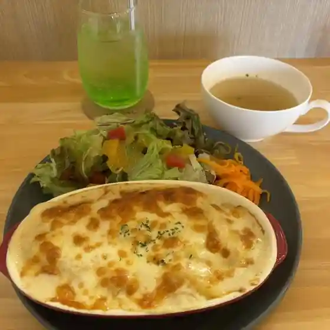
Tsunagariumu
越中屋旅館

Etchuu Ya Ryokan
ゆめあとむ
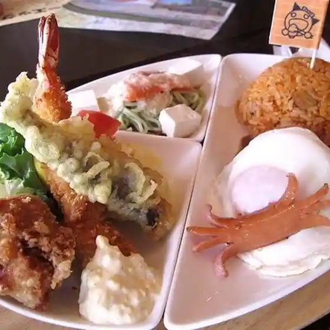
Yumeatomu
大草原の小さな宿こもれび
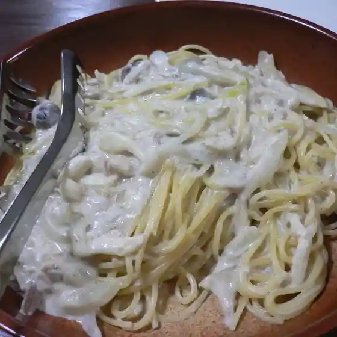
Daisougen No Chiisa Na Yado Komorebi
森歩2
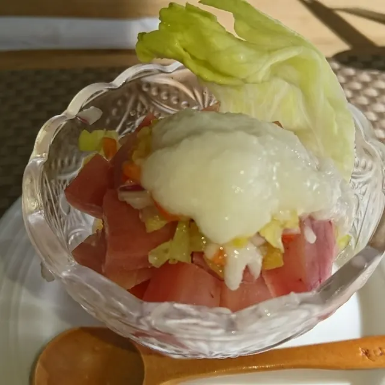
Mori Ho 2
＜ガーデンカフェ＞ラウラウ
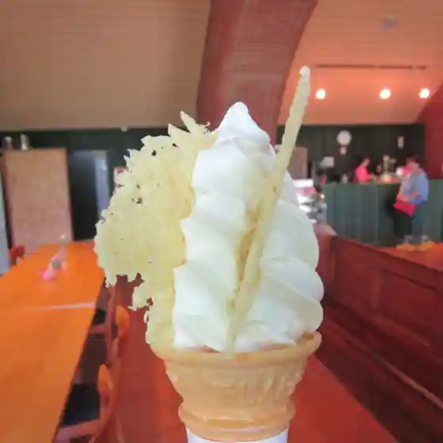
Rau Rau
とんかつのみしな
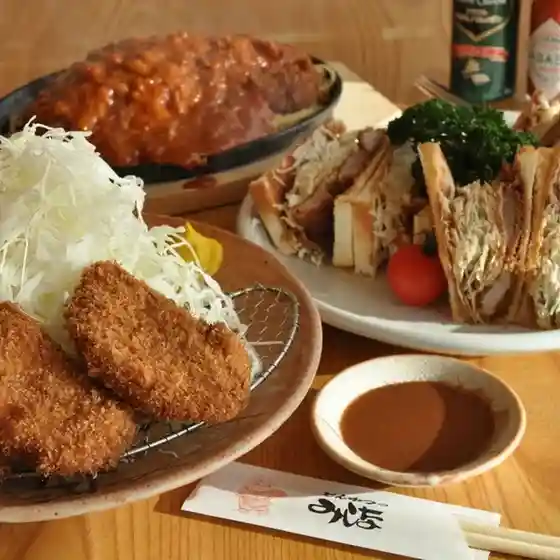
Tonkatsunomishina
SWEET PICNIC
Sweet Picnic
牧場のソフト 御影店
Bokujou No Sofuto Mikage Mise
目分料
Mebun Ryou
カフェクーネル
Kafekuuneru
爺遊森゛
Jii Yuu Mori "
むつみ荘
Mutsumi Sou
お寺カフェ しゃくなげ
O Tera Kafe Shakunage
えびすや菓子舗
Ebisuya Kashi Ho
サワラビテラス
Sawarabiterasu
あすなろファーミング
Asunaro Faamingu
居酒屋てらまち
Izakaya Teramachi
レストラン北野
Resutoran Kitano
みしなベーカリー
Mishina Beekarii
焼肉 かじさん
Yakiniku Kajisan
田村製麺工業
Tamura Seimen Kougyou
グレイス・喫茶
Gureisu Kissa